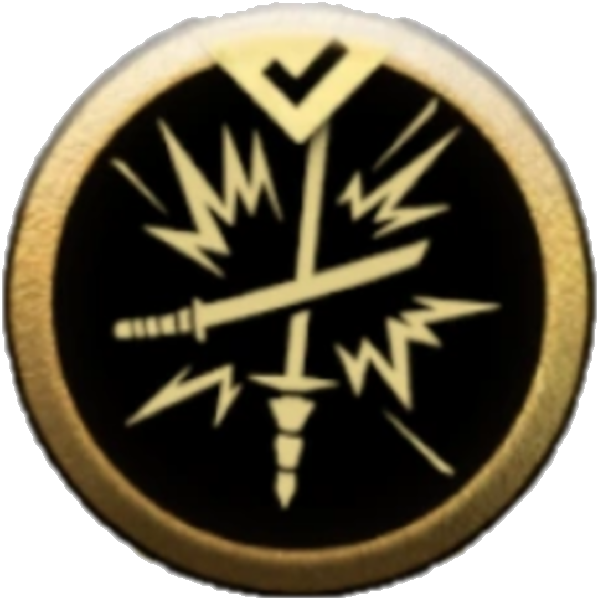
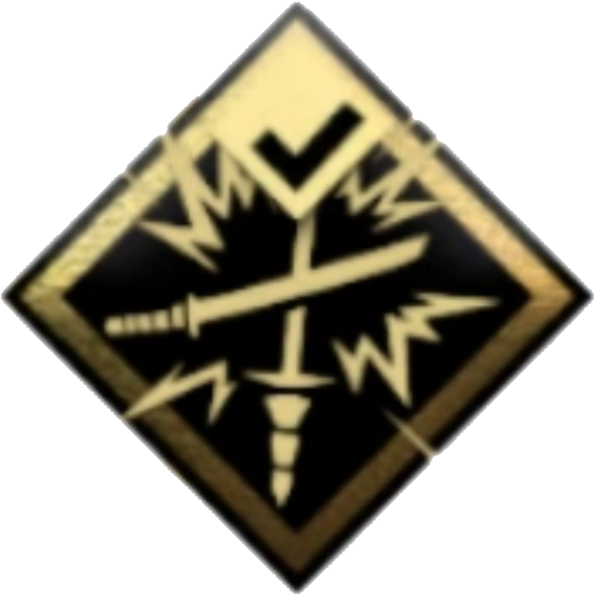
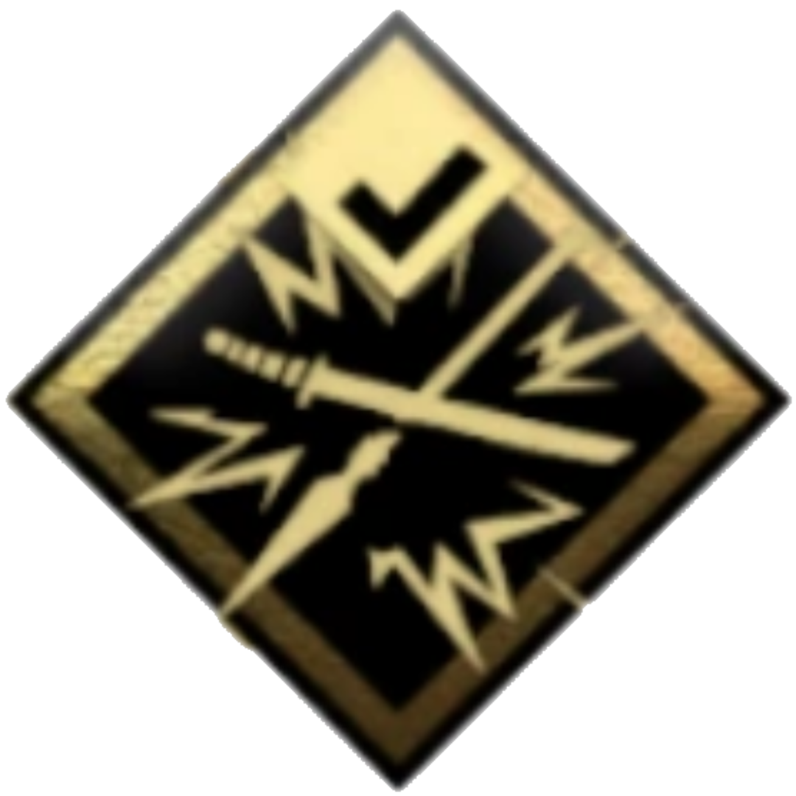
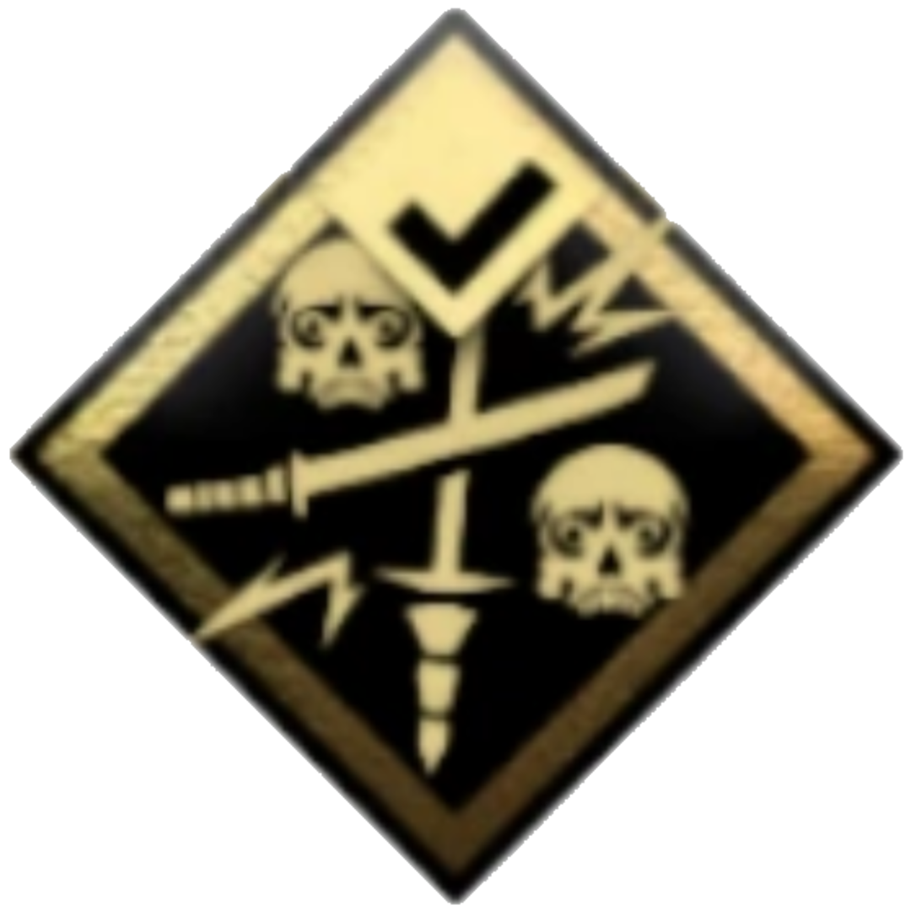

| HABILITATS | |||
|---|---|---|---|
| TÉCNIQUES DE SAMURÁI | DESVIACIÓ | EVASIÓ | |
| ICONE | HABILITAT | ICONE | HABILITAT |
|  | Desviació Perfecta |  |
Evasió Rodant |
 |
Desviació Sanadora |  |
Tall amb Finta |
|  | Desviació d'Espada Inquebrentable |  |
Atac en Carrera |
 |
Desviació de Fletxes |  |
Carga d'Espatlla |
 |
Desviació de Llança |  |
Atac Demorat |
|  | Desviació Determinant |  |
Atac a Cavall |
|  | Desviació Aterradora |  |
Esquiva Perfecta |
| TÈCNIQUES POSTURES | PEDRA | AIGUA | VENT | LLUNA | |||
|---|---|---|---|---|---|---|---|
| ICONE | HABILITAT | ICONE | HABILITAT | ICONE | HABILITAT | ICONE | HABILITAT |

KATANA
La Katana Sakai és la principal arma principal utilitzada per Jin Sakai durant la invasió mongol a l'illa de Tsushima . S'utilitza juntament amb el Sakai Tanto i constitueix el " Sakai Steel ".
ARC LLARG
El llegendari arc llarg d'Uchitsune és una arma que Jin Sakai pot adquirir completant el conte mític " La maledicció d'Uchitsune " . A diferència d'altres armes que podrien entrar en possessió de Jin, l'arc llarg d'Uchitsune és una relíquia legendaria la naturalesa sobrenatural de la qual ha quedat ambigua.
ARC CURT
L' arc curt és una arma a distància utilitzada per Jin Sakai en el seu viatge per alliberar Tsushima dels invasors mongols. Jin adquireix l'arc durant el " The Tale of Sensei Ishikawa "; originàriament era propietat d'Ishikawa i li va ser atorgat per Lord Nagao com a símbol del seu llarg servei al clan Nagao. El sensei permet a Jin "manllevar" l'arc fins que s'aconsegueixi la victòria sobre Khotun Khan .
KUNAI
El Kunai és una de les armes fantasmes utilitzades per Jin. Es desbloqueja gastant un punt de tècnica a la secció Armes fantasma del menú Tècniques. Els enemics mongols d'alt nivell i els líders mongols trobats en trobades aleatòries intentaran utilitzar-los si Jin es troba en un lloc de difícil accés (com ara en aigües profundes) però els veu.
BOMBA ENGANXOSA
La bomba enganxosa és una arma fantasma utilitzada per Jin Sakai. És una bomba coberta de camp que s'enganxa als enemics i/o objectes abans d'explotar. Tot i que les bombes enganxoses són principalment una arma fantasma, també es poden utilitzar en estils de joc samurais.